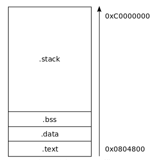
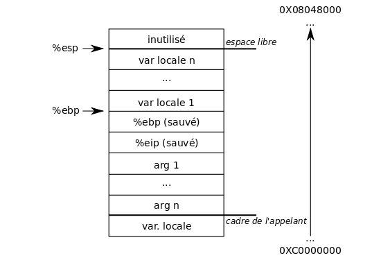
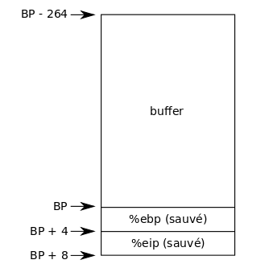

<!doctype html>
<html lang="en">

  <head>
    <meta charset="utf-8">

    <title>Buffer Overflow</title>

    <meta name="description" content="cours d'introduction au buffer overflow">
    <meta name="author" content="Loïc Delestra">

    <meta name="apple-mobile-web-app-capable" content="yes" ></meta>
    <!-- <meta name="apple-mobile-web-app-status-bar-style" content="black-translucent" /> -->
    <!-- <meta name="viewport" content="width=device-width, initial-scale=1.0, maximum-scale=1.0, user-scalable=no, minimal-ui"> -->

    <link rel="stylesheet" href="css/reveal.css">
    <link rel="stylesheet" href="css/theme/beige.css" id="theme">

    <link rel="stylesheet" href="css/custom.css">

    <!-- Code syntax highlighting -->
    <link rel="stylesheet" href="lib/css/zenburn.css">

    <!-- Printing and PDF exports -->
    <script>
      var link = document.createElement( 'link' );
      link.rel = 'stylesheet';
      link.type = 'text/css';
      link.href = window.location.search.match( /print-pdf/gi ) ? 'css/print/pdf.css' : 'css/print/paper.css';
      document.getElementsByTagName( 'head' )[0].appendChild( link );
    </script>

    <!--[if lt IE 9]>
    <script src="lib/js/html5shiv.js"></script>
    <![endif]-->
  </head>

  <body>

    <div class="reveal">

      <!-- Any section element inside of this container is displayed as a slide -->
      <div class="slides">
        <section data-markdown>
          <script type="text/template">
            #Buffer Overflow
          </script>
        </section>


        <section>
          <section data-markdown>
            <script type="text/template">
              #1. Rappel allocation de la mémoire
            </script>
          </section>

          <section data-markdown style="text-align: left;">
            <script type="text/template">
              ###Les algorithmes consomment de l'espace mémoire.
              Trois stratégies d'allocation:
                - **statique** (langages compilés)
                - dynamique sur la **pile**
                - dynamique sur le **tas**
            </script>
          </section>

          <section data-markdown>
            <script type="text/template">
              A chaque stratégies correspond une région mémoire du programme ou segment.
              - **data et bss** pour statique
              - **stack** pour la pile
              - **heap** pour le tas
            </script>
          </section>

          <section data-markdown>
            <script type="text/template">
              ##Allocation statique
              - Avant l'exécution du programme.
              - L'espace memoire est déjà reservé dans le fichier exécutable du programme lorsque le système d'exploitation charge le programme en mémoire pour l'exécuter.
              - Réservé cet espace au moment de la compilation dans le fichier binaire
              - Aucune allocation lors de l'exécution
            </script>
          </section>

          <section data-markdown>
            <script type="text/template">
              ##Allocation dynamique
              Durant l'exécution du programme.

              Ne se trouve pas déjà dans le fichier exécutable du programme lorsque le système d'exploitation charge le programme en mémoire pour l'exécuter.

              Deux allocation dynamique:
              - sur la pile
              - sur le tas
            </script>
          </section>

          <section data-markdown>
            <script type="text/template">
              ###Allocation sur la pile (automatique)
              Exécution d'un programme utilise généralement une pile contenant les cadres d'appel aux fonction du langage de programmation utilisé.
              Les variables (automatique ou lexicales) dont la porté est réduite à la fonction sont:
              - Alloué lors de l'entré dans la fonction
              - Désalloués automatiquement lors de la sortie de la routine.

              Un segment mémoire, dit **segment de pile** est utilisé pour ces allocations / désallocations.
            </script>
          </section>

          <section data-markdown>
            <script type="text/template">
              ###Allocation sur le tas
              lorsque les besoins en mémoire dépendent de l'usage lors de l'exécution du programme, il faut pouvoir demander lors de l'exécution (au runtime) au système d'allouer de nouvelles zones de mémoire.

              => l'allocation et la libération de cette mémoire est à la charge du développeur.
              En C `malloc` et `free` ; en C++ `new` et `delete`
            </script>
            </section>

            </section>

            <section>
            <section data-markdown>
            <script type="text/template">
              #2. Execution d'un programme
            </script>
            </section>

            <section data-markdown>
            <script type="text/template">
              ##Division de l'espace mémoire
              l'espace virtuel d'un système d'exploitation est divisé en deux parties :
              - l'espace utilisateur situé dans l'intervalle 0x00000000 - 0xBFFFFFFF
              - l'espace noyau situé dans l'intervalle 0xC0000000 - 0xFFFFFFFF

              Les exécutables sont chargés à partir de l'adresse virtuelle 0x08048000 appelée adresse de base
            </script>
            </section>

            <section data-markdown>
            <script type="text/template">
              ###Organisation de l'espace utilisateur d'un processus:
              
              - .text qui contient le code du programme.
              - .data qui contient les données globales initialisées.
              - .bss qui contient les données globales non initialisées.
              - .stack qui est la pile du programme.
            </script>
            </section>

            <section data-markdown>
            <script type="text/template">
              exemples:
              ```c
              char a;   // .bss
              char b[] = "b";     // .data

              int main() {
              char c;     // .stack
              static char d;      // .bss
              static char e[] = "e"; // .data

              return 0;
              }
              ```
              - .text qui contient le code du programme.
              - .data qui contient les données globales initialisées.
              - .bss qui contient les données globales non initialisées.
              - .stack qui est la pile du programme.
            </script>
            </section>

            <section data-markdown>
            <script type="text/template">
              ##ASM x86
              Politique de construction de la pile: construite de bas en haut (des adresse les plus grandes vers les plus petites).
              Trois registres essentiels:
              - `%eip` (instruction pointer) : pointeur vers la prochaine instruction à exécuter.
              - `%ebp` (base pointer) : pointeur de base. Son rôle est de placer un repère permettant d'accéder facilement aux arguments de la fonction et/ou aux variables locales.
              - `%esp` (stack pointer) : pointeur vers le prochain emplacement libre de la pile.
            </script>
            </section>

            <section data-markdown>
            <script type="text/template">
              ###Cadre d'une fonction
              Le cadre de fonction est un ensemble d'éléments placés sur la pile appartenant à une fonction. Cet ensemble est composé des arguments de la fonction, de certaines informations relatives à la fonction appelante (sauvegarde des registres `%eip` et `%ebp`), et enfin, des variables locales.
            </script>
            </section>

            <section data-markdown>
            <script type="text/template">
              ###Cadre d'une fonction
              
            </script>
            </section>

            <section data-markdown>
            <script type="text/template">
              ##Appeler une fonction
              ```
              foo(5, 6);
              ```
              La fonction appelante va devoir effectuer cet appel:

              ```
              push   $0x6            ; Ajout du dernier argument
              push   $0x5            ; Ajout du premier argument
              call   0xadresse <foo> ; Adresse hexadécimale de la fonction à appeller
              add    $0x8,%esp       ; Retrait des variables de la pile (2 mots de 4 bytes)
              ...
              ```
              NB: `call` sauvegarde eip (pointeur vers la prochaine instruction à exécuter) sur la pile puis jump à l'adresse de la fonction appelée
            </script>
            </section>

            <section data-markdown>
            <script type="text/template">
              ###Fonction appelée
              Une fonction est composée d'un **prologue** et d'un **épilogue**.

              ####exemple
              ```
              int foo(int a, int b) {
              int c = a;
              int d = b;
              return c;
              }
              ```
            </script>
            </section>

            <section data-markdown>
            <script type="text/template">
              ###prologue:
              Permet de mettre en place son cadre sur la pile en sauvegardant le pointeur de base de la fonction appelante, en initialisant son propre pointeur de base, en allouant assez d'espace sur la pile pour ses variables locales et, éventuellement, en sauvgardant les registres qu'elle va utiliser dans le but de sauvegarder les données de la fonction appelante
              ```
              push   %ebp       ; Sauvegarde du registre %ebp de l'appelant
              mov    %esp,%ebp  ; Initialisation du registre %ebp de la fonction
              sub    $0x18,%esp ; GCC réserve 24 bytes minimum
              push   %eax       ; Sauvegarde du registre de retour
              ```
            </script>
            </section>

            <section data-markdown>
            <script type="text/template">
              ###épilogue
              Permet à la fonction de préparer le retour à la fonction appelante en restaurant les registres sauvés, en désallouant les variables locales, en restaurant le pointeur de base de la procédure appelante et en chargeant dans le registre %eip l'adresse de l'instruction de la fonction appelante à exécuter :
              ```
              pop    %eax ; Restauration du registre %eax
              leave       ; Désallocation des variables locales et restauration de %ebp
              ret         ; Retour à la procédure appelante en changeant %eip
              ...
              ```
              les instructions leave et ret sont équivalentes aux instructions suivantes :
              ```
              mov    %ebp,%esp ; leave
              pop    %ebp      ; leave
              pop    %eip      ; ret
              ```
            </script>
            </section>

            </section>

            <section>
            <section data-markdown>
            <script type="text/template">
              #3. Buffer Overflow
              ##BoF
              ###Dépassement/Débordement de tampon
            </script>
            </section>

            <section data-markdown>
            <script type="text/template">
              ###Bug inital:
              Un logiciel écrit dans un buffer au dela de sa taille limite et fini par écrire à l'extérieur de l'espace alloué au tampon.
              - -> Ecrasant les informations nécéssaires au processus.
              - -> Segfault
            </script>
            </section>

            <section data-markdown>
            <script type="text/template">
              ###Exploitation du bug:
              Il est bassiquement possible d'exploiter ce bug (provenant d'une erreur de programmation) pour faire exécuter au processus des instructions arbitraire.

              En C ce bug est typiquement provoqué par l'utilisation de `strcpy` (copie de chaine de caractère) sur une entré utilisateur sans vérification du nombre de caractère à traiter.
            </script>
            </section>

            <section data-markdown>
            <script type="text/template">
              ###Exemple
              ```
              #include <stdio.h>
              #include <string.h>

              void foo(char* string) {
              char buffer[256];
              strcpy(buffer, string);
              }

              int main(int argc, char** argv) {
              if (argc > 1)
              foo(argv[1]);

              return 0;
              }
              ```
            </script>
            </section>

            <section data-markdown>
            <script type="text/template">
              Le prologue de la fonction foo en ASM
              ```
              push   %ebp
              mov    %esp,%ebp
              sub    $0x108,%esp ; 0x108 = 264
              ```

              

              Extrapolation du cadre
            </script>
            </section>

            <section data-markdown>
            <script type="text/template">
              ###Objectif de l'attaque
              Ecraser `%eip` pour modifier l'adresse de retour de la fonction.
            </script>
            </section>

            <section data-markdown>
            <script type="text/template">

            </script>
            </section>

            <section data-markdown>
            <script type="text/template">

            </script>
            </section>
            </section>


            <section>
            <section data-markdown>
            <script type="text/template">
              ##Sources :
              <br>
              Système d'exploitation A.Tanenbaum
              <br>
              <br>
              https://fr.wikipedia.org/wiki/Allocation_de_mémoire
              <br>
              <br>
              http://www.student.montefiore.ulg.ac.be/~blaugraud/node2.html
              <br>
              <br>
              http://gits.hydraze.org/
            </script>
            </section>
            </section>

          </div>
        </div>

        <script src="lib/js/head.min.js"></script>
        <script src="js/reveal.js"></script>

        <script>

          // Full list of configuration options available at:
          // https://github.com/hakimel/reveal.js#configuration
          Reveal.initialize({
            controls: true,
            progress: true,
            history: true,
            center: true,
            slideNumber: true,

            transition: 'slide', // none/fade/slide/convex/concave/zoom

            // Optional reveal.js plugins
            dependencies: [
        { src: 'lib/js/classList.js', condition: function() { return !document.body.classList; } },
        { src: 'plugin/markdown/marked.js', condition: function() { return !!document.querySelector( '[data-markdown]' ); } },
        { src: 'plugin/markdown/markdown.js', condition: function() { return !!document.querySelector( '[data-markdown]' ); } },
        { src: 'plugin/highlight/highlight.js', async: true, condition: function() { return !!document.querySelector( 'pre code' ); }, callback: function() { hljs.initHighlightingOnLoad(); } },
        { src: 'plugin/zoom-js/zoom.js', async: true },
        { src: 'plugin/notes/notes.js', async: true }
        ]
        });

      </script>

  </body>
</html>
